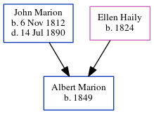

Albert Marion 1849 -
[ Home ] | [ Calendar ] | [ Surnames Index ] | [ Census Index ] | [ Family History ]The child of John Marion (a confectioner: 254 king street: importer of french confectionary and toys) and Ellen Haily, Albert Marion, the first cousin four-times-removed on the father's side of Michele Copp (née Phillips), was born in South Carolina in 18491. In 1850, he was living in St Michael and St Phillip, Charleston, South Carolina1.
Parents
- John was born on Nov 6, 1812
- Ellen was born in 1824
Citations
- 1850 United States Federal Census Online publication - Provo, UT, USA: The Generations Network, Inc., 2005.Original data - United States of America, Bureau of the Census. Seventh Census of the United States, 1850. Washington, D.C.: National Archives and Records Administration, 1850. M432,
Family Tree
Generated by ged2site. Last updated on Jun 6, 2024